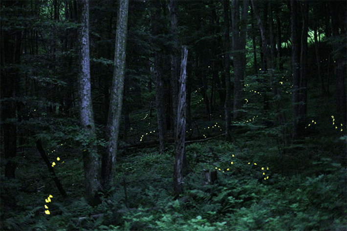

On a sticky, late-spring night in parts of the eastern United States, you might witness one of the wonders of the animal kingdom: a constellation of hundreds of fireflies blinking in unison. Only three of the 130 or so species of fireflies in the U.S. are known to exhibit this synchrony, and they do so for only a few weeks a year.
The displays have gotten so popular that the Great Smoky Mountains and Congaree National Parks hold lotteries for the privilege of watching the fireflies in the parks during their peak. If you are lucky enough to win that lottery, you might run into Orit Peleg, a computer scientist and biophysicist from the University of Colorado Boulder, setting up cameras to record the display with some of her research collaborators.
Nautilus premium members can listen to this story, ad-free.
Nautilus members can listen to this story.
The data she and her colleagues have collected over the past seven years has shed new light not only on how and why fireflies synchronize, but also on the mathematical properties of synchrony across biological and humanmade systems, in the contraction of heart tissue, audience applause at the end of a concert, even the electrons of a superconductor. “It’s like seeing all of these mathematical models come to life,” says Peleg.
“Once all of these experiments are running, there’s downtime where we just have to wait and watch the fireflies.”
Peleg first learned about firefly synchrony as an undergrad physics major, when she was introduced to the work of Steven Strogatz, an applied mathematician renowned for models of synchronization in nature. In his writing, he drew parallels between the synchronous displays of fireflies and the alignment of electrons in a superconductor, a material that allows electricity to flow through it indefinitely without energy loss. Later, as a postdoctoral researcher, Peleg used physics to explore the complex dynamics of living systems, including honeybee swarms and protein folding patterns. When she started her own lab, she recalled Strogatz’s example of the fireflies and was surprised at how little empirical data she could find about the phenomenon, so familiar to children around the world in spring and summertime.
Peleg and her collaborators were soon trekking into the forest with tents, cameras, nets, and other equipment to capture the glittering displays of the fireflies. “It’s both the best time of the year, and at the same time the most stressful time of the year,” Peleg says of her time in the field. They only have a week or two to collect data, and if something goes wrong, they have to wait until the next year to try again. Fireflies don’t observe the Gregorian calendar. Their emergence each year varies based on weather conditions and other unpredictable events. The researchers rely on park entomologists and amateur scientists to help them decide when to make the trip out, but they don’t always get a lot of advance notice.
Western scientists were skeptical when they first heard reports of synchronous firefly displays from Southeast Asia in the early 1900s. They dismissed these displays as an illusion or a statistical coincidence. Then in the 1960s, American biologists John Buck and his wife and collaborator Elisabeth conducted some of the first scientific studies of firefly synchrony.1 The pair captured fireflies while traveling in Thailand and took them back to their hotel room to observe them. Once the fireflies settled down, they began blinking, first separately and then gradually together in groups of two or three, until eventually the whole group blinked in unison. These first, informal observations paved the way for decades of more rigorous investigations into firefly behavior by the Bucks and other researchers.
Since then, firefly synchrony has become a popular topic of study not just in biology but also in mathematics. Blinking fireflies proved a compelling case study for various mathematical models of so-called coupled oscillators. An oscillator is any object that cycles between states in some way, like the tick of a metronome or the blink of a light. Oscillators are said to be coupled if their oscillations influence one another. For instance, metronomes that are sitting on a platform suspended in the air will often lock into the same rhythm.

LIGHTNING BUG:The fireflies pictured here belong to a species known as Photinus carolinus, which computer scientist and biophysicist Orit Peleg has studied. When certain population densities are reached, the males of the species will blink in unison to better attract females in their vicinity to mate. But the flashes aren’t actually 100 percent synchronous, Peleg has found. They propagate like a “wave” you might see at a crowded sports stadium. Photo by Radim Schreiber / Wikimedia Commons.
In 1975, Kyoto University physicist Yoshiki Kuramoto developed the Kuramoto model for coupled oscillation, which explained how a large number of individual actors with their own natural frequencies could spontaneously synchronize. In his model, oscillators that were out of sync with each other would adjust their timing slightly based on how close they were to being in sync. Two oscillators that were only slightly out of rhythm would lock in together quickly, while it would take longer for oscillators whose rhythms were more distinct.
Kuramoto’s paper was purely theoretical: He was trying to streamline the mathematical approach that another researcher, theoretical biologist Art Winfree, had taken to describing synchrony in biological systems. “At the time, I had no idea that my model could realistically describe synchronization in natural or manmade systems,” Kuramoto wrote in an email.
While both male and female fireflies flash, only the males synchronize.
But in the 1990s, other researchers started publishing papers that showed that the Kuramoto model for coupled oscillators could describe real-world situations such as the motion of electrons in superconductors and, yes, swarms of synchronous fireflies.
Even hidden motions in our own bodies. “Having a new model system where you can really study synchrony in quite granular detail is a good thing,” says Bard Ermentrout, a mathematical biologist at the University of Pittsburgh who has worked on the mathematics of several different examples of coupled oscillators in nature, from fireflies to neurons to the intestinal pulsing that pushes material through the gut. “It turns out there’s this really cool intrinsic pacemaker system in the colon,” Ermentrout says. It may not be the most glamorous example of biological synchrony, but “if that’s broken, then you die,” he says.
When Peleg started studying fireflies, two mathematical models already existed for firefly synchrony—not just the Kuramoto model, but also another known as integrate-and-fire, which is based on neuron firing and takes into account the length of a firefly’s light burst and the gap of darkness between bursts. Peleg felt that researchers needed better experimental data to verify that the models fit and to help refine the way they work. Previous researchers had made still and video recordings of firefly swarms, but three-dimensional information about firefly movements was lacking, so they could not accurately determine the distances between individual fireflies in a swarm. Using multiple cameras to record the firefly displays, Peleg and her colleagues were able to create more accurate reconstructions of the flickering swarms of insects, which allowed them to get a clearer view of how and when synchrony was happening.
Peleg and her team usually spend the first night of their trip staking out likely firefly haunts so they can set up their equipment where the fireflies will be, no matter how out of the way those places are. The insects don’t necessarily choose to hang out in the spots where researchers can observe them most easily. “A few times, we were optimistic and put the cameras in places that were convenient for us, Peleg says, “and the fireflies just didn’t show up.” Still, she relishes the chance to sit in the parks and take in the light show. “Once all of these experiments are running, there is kind of a downtime where we just have to wait and watch the fireflies,” she says. “No complaints there.”
Synchronization is a relatively rare behavior for fireflies. “It’s weird,” says Sara Lewis, a firefly researcher at Tufts University and author of the book Silent Sparks: The Wondrous World of Fireflies. “The behavior has evolved many times, independently, in different lineages of fireflies that are not related.” Among the thousands of firefly species in the world, only a handful blink in sync. A family of fireflies with dozens of species generally only has one or two synchronous species. Scientists still do not understand why synchrony has evolved only in these isolated cases. “Why these species and not other species?” Lewis asks. Does it confer an advantage on species with particular physiological characteristics or habitats? Some researchers have conjectured that it helps the insects mate en masse in places where visibility may otherwise be low, such as tropical swamps.
While both male and female fireflies flash, only the males synchronize. In one species Peleg has studied, Photinus carolinus, males generally flash on the wing to attract the attention of females, who perch in the vegetation. The females occasionally flash back in response, a gesture meant to entice the males to come mate with them. Photinus carolinus females are most likely to respond when males are synchronized.
Among the thousands of firefly species in the world, only a handful blink in sync.
In a 2021 paper, Peleg and her coauthors Raphaël Sarfati and Julie C. Hayes used their reconstructions to measure how the density of fireflies in a particular area would affect their synchrony.2 If a few fireflies are spread out over a large area, they probably won’t end up synchronizing. As more fireflies congregate in the same space, it becomes more likely that they will start to flash in sync. Peleg, Sarfati, and Hayes came up with a critical density threshold fireflies need to attain to start synchronizing. Their study also addressed one of the most pressing scientific questions about firefly synchrony: How do they do it?
The group found that “synchronous” firefly flashes aren’t actually 100 percent synchronous. They propagate a little like “the wave” in a crowded sports stadium and sometimes run into physical obstructions such as trees that break up the synchrony, supporting one theory that fireflies use visual cues to start synchronizing with each other. Ermentrout hopes the work will help clarify the radius of influence each individual firefly has on a group. “How close does another firefly have to be to influence the rhythm?” he asks.
In 2002, Kuramoto and his coauthor Dorjsuren Battogtokh discovered that under certain conditions, the coupled oscillators in the Kuramoto model could exhibit strange behavior, which has since been dubbed a “chimera state.” In a chimera state, some of the oscillators are locked in phase with each other, while the rest are either out of phase or completely asynchronous. Even more than two decades after the phenomenon was given a name, the way chimera states function remains mysterious. The biological significance of such states is not clear yet, either, although some researchers have found evidence that epileptic seizures display aspects of chimera states, so a deeper understanding of them could inform treatments for epilepsy and potentially other diseases.
Peleg and Sarfati published a 2022 paper describing these chimera states in swarms of fireflies in Congaree National Park, an old growth river swamp forest in South Carolina.3 Observing a chimera state in a natural system is alluring because, despite the Kuramoto model’s prediction that they will occur, it has been hard to find tangible evidence of such behavior in nature. “If we know that fireflies do something weird,” Peleg says, “we can try to check whether all of these other systems are doing that as well.”
Other researchers are skeptical. There’s a fine line between a chimera state and a few odd fireflies that are out of step with a larger group. “We really don’t see it,” Ermentrout says. “It’s hard to define a chimera state unless you’ve got really a lot of oscillations.” He doesn’t think the number of fireflies that have been observed out of sync with the group is sufficient to truly call the phenomenon a chimera state.
But Peleg believes that even though the numbers they observed are small, the persistence of the behavior over time makes it a good example. “These two groups coexist for a duration that is much longer than the interval of the individual flashes,” she says, around half an hour. One of Peleg’s students is currently working on experiments to further probe the conditions and mechanisms that might produce chimera states in firefly groups, using LEDs to influence their rhythms.
For decades, global firefly populations have been declining, due to habitat loss, light pollution, and pesticide use. If it turns out that synchrony confers a mating advantage on males of synchronizing species, population declines may have a vicious cycle effect: Fewer fireflies could lead to lower population densities, which would decrease synchrony and therefore mating success.
Peleg is interested not only in how her work can help us understand the mysterious rhythms and mathematical models that govern some natural systems, but also how we can protect these glowing bugs. 
Lead image: Fer Gregory / Shutterstock
References
-
Buck, J. & Buck, E. Biology of synchronous flashing of fireflies. Nature 211, 562-564 (1966).
-
Sarfati, R., Hayes, J.C., & Peleg, O. Self-organization in natural swarms of Photinus carolinus synchronous fireflies. Science Advances 7, eabg9259 (2021)
-
Sarfati, R. & Peleg, O. Chimera states among synchronous fireflies. Science Advances 8, eadd6690 (2022)